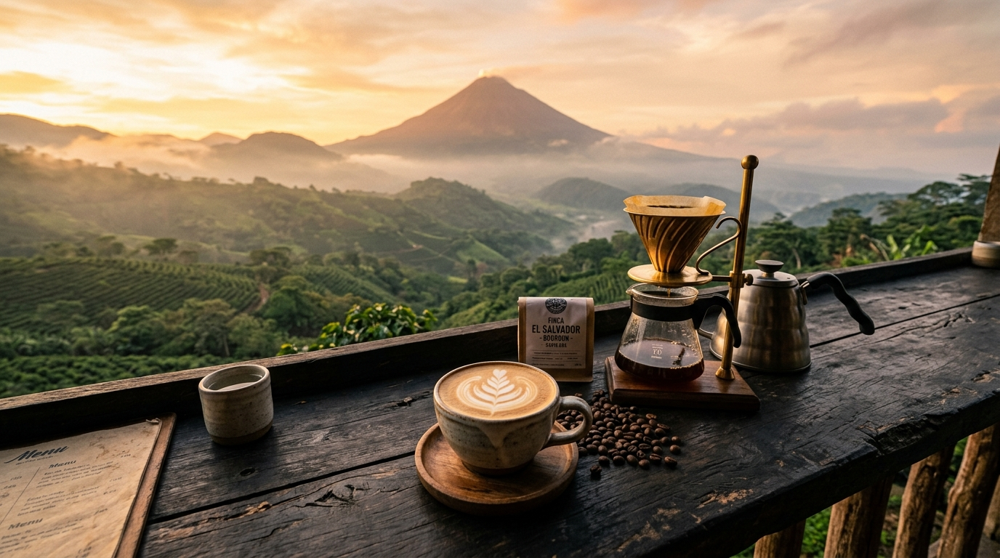
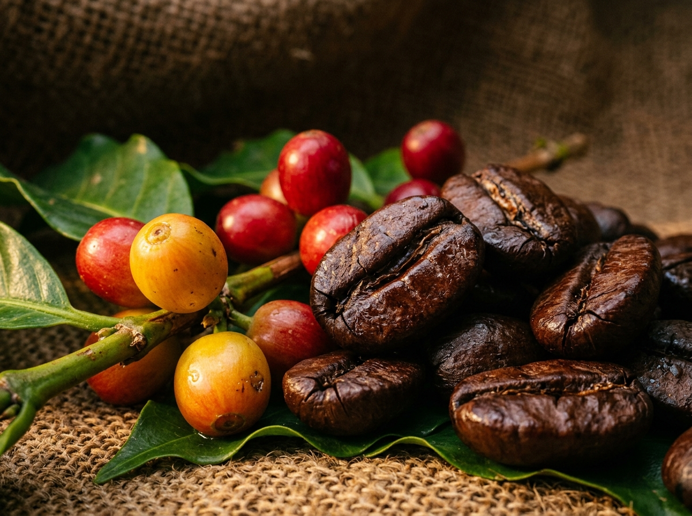

Un recorrido sensorial por las 6 cordilleras volcánicas, las cafeterías de autor más premiadas y la maestría de un país cuna de Campeones Mundiales de Barismo.
Cada cadena montañosa salvadoreña posee un microclima único, bañado por cenizas volcánicas ricas en minerales que otorgan perfiles en taza mundialmente venerados.
Selección curada de los templos de especialidad en San Salvador, Santa Tecla, Santa Ana y la Ruta de las Flores.
Prueba buscando con otro término o seleccionando otra categoría.
El Salvador no solo produce café; ha creado variedades botánicas legendarias que han redefinido los estándares mundiales de dulzura, tamaño de grano y complejidad aromática.
Cruce de Pacas × Maragogipe creado por el ISIC
El tesoro supremo de la caficultura salvadoreña. Grano de dimensiones imponentes, cuerpo suntuoso y un estallido frutal de melocotón, maracuyá, jazmín silvestre y acidez brillante.
La nobleza tradicional del bosque cafetero
El linaje que convirtió a El Salvador en una potencia cafetalera. Ofrece una dulzura acaramelada natural inconfundible, balance perfecto, chocolate con leche y textura redonda aterciopelada.
Descubierto por la familia Pacas en Santa Ana
Mutación natural espontánea del Bourbon adaptada a los vientos de las cumbres volcánicas. Produce una taza limpia y vivaz, notas de manzana verde, cacao y cítricos suaves muy refrescantes.

Al fusionar la resistencia y taza dulce del Pacas con el tamaño gigantesco y notas aromáticas florales del Maragogipe, los científicos salvadoreños crearon un perfil organoléptico inigualable.
En certámenes como el Cup of Excellence, microlotes de Pacamara salvadoreño han alcanzado precios récords superiores a los $100 dólares por libra, exportándose a los tostadores más exigentes de Tokio, Melbourne, Londres y San Francisco.
Responde 3 sencillas preguntas sobre tus gustos y nuestro sumiller digital te indicará tu variedad predilecta, notas y la cafetería perfecta para vivir la experiencia.
Selecciona la nota sensorial que más te cautiva al despertar:
Prepara tu café salvadoreño con precisión milimétrica. Selecciona el método, ajusta el gramaje deseado y sigue nuestro cronómetro interactivo con alertas de vertido.